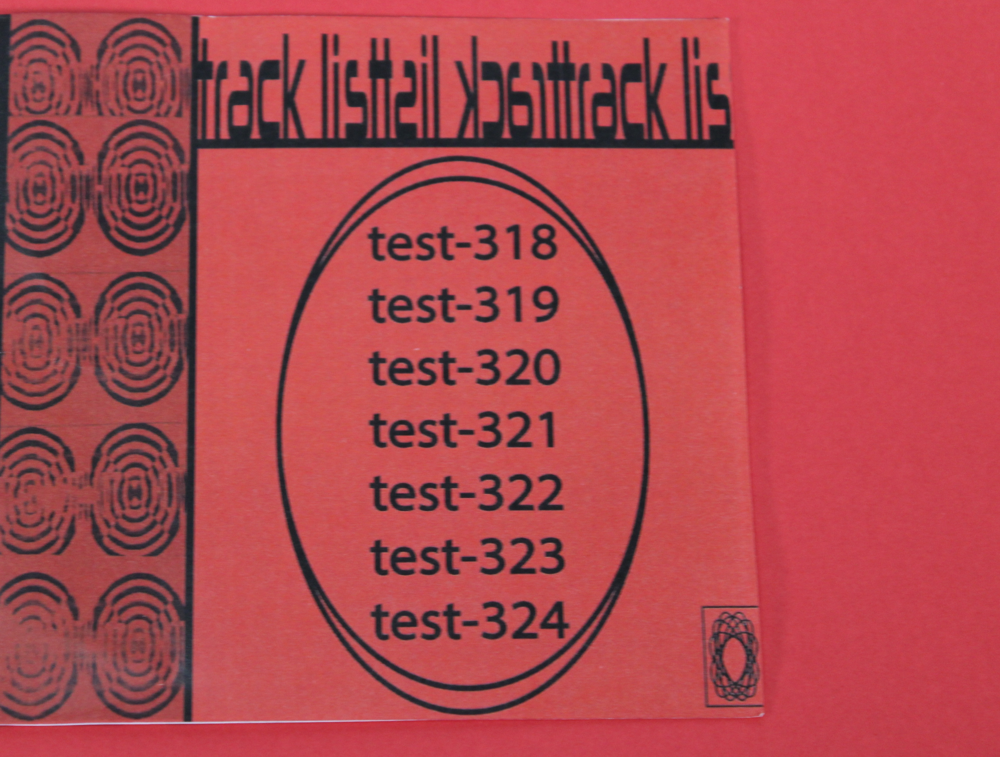
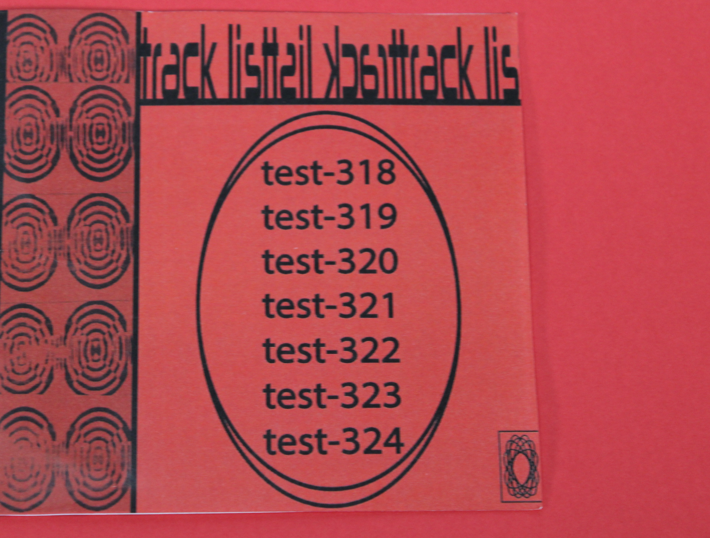

Julia Williams's Project
 


Description
A CD inspired by rave culture, featuring bass and drum loops, designed to represent the energy and repetition of raves through visual and musical elements and vibes.
Categories
- Tiny Pic
- Foldable
- Time-Based Media
Stickers in the shape of circles with the word HOT written. A tradition of oplacing on people and finding them after the rave. Creating fun and sociable environment.
CD case with created track and cover design on what the artists beleived embodied rave.
A CD soundtrack featuring bass and drum loops, creating the immersive atmosphere of a rave.